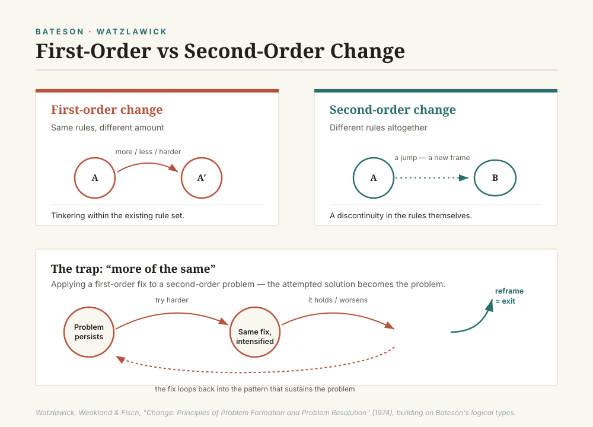

A working framework for telling a real structural shift apart from a better-dressed version of the same old fix — for reading emails, sermons, and the recurring disputes of church life.
There's a particular kind of stuck that doesn't respond to effort. You clarify the process and the confusion deepens. You document the boundaries of a dispute more carefully and it drags on regardless. Everyone involved is working hard, in good faith, on a fix that keeps not working.
Gregory Bateson called this a confusion of logical levels. Paul Watzlawick gave it a sharper practical edge: first-order change versus second-order change. Telling them apart is often the whole ballgame.
Same rules, different amount. Tinkering, adjusting, doing it better, more, or faster. Most problem-solving is this — and usually that's right.
Different rules altogether. A discontinuity, a jump, a change of the system itself — not a better move within it.
The trouble starts when a second-order problem gets handed a first-order solution — applied with real diligence, in increasing doses. Because the problem is structural, more diligence doesn't touch it. It can make it worse. Watzlawick calls this more of the same, and it's the most common way well-intentioned leaders entrench a problem they're genuinely trying to solve.
